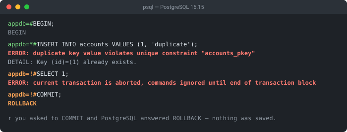

Quick answer
- This is not your error. An earlier statement in the same transaction failed; everything after it reports this instead.
- Find the real one in the server log — it sits directly above the first
25P02line, with itsSTATEMENT:. ROLLBACKclears the state.SAVEPOINT+ROLLBACK TO SAVEPOINTkeeps the transaction alive instead.- Never wrote
BEGIN? Your driver or ORM opened the transaction for you.
The exact error string
ERROR: current transaction is aborted, commands ignored until end of transaction block
-- the same 25P02 through each driver:
psycopg2.errors.InFailedSqlTransaction: current transaction is aborted, commands ignored until end of transaction block
org.postgresql.util.PSQLException: ERROR: current transaction is aborted, commands ignored until end of transaction block
ActiveRecord::StatementInvalid: PG::InFailedSqlTransaction: ERROR: current transaction is aborted
django.db.utils.InternalError: current transaction is aborted, commands ignored until end of transaction blockPostgreSQL aborts the entire transaction as soon as any statement inside it raises an error, and from that moment every command — even SELECT 1 — is rejected with this message. It is a status report, not a diagnosis: the statement it names is not the statement that broke anything.
The error code is SQLSTATE 25P02, symbolic name in_failed_sql_transaction. This behaviour is deliberate and it differs from MySQL and SQL Server, which roll back only the failing statement and let the transaction carry on. PostgreSQL requires you to decide explicitly what to do.
What it actually looks like

appdb=*# to appdb=!# the moment the transaction fails, and the final COMMIT is answered with ROLLBACK.That prompt character is documented psql behaviour and the fastest signal you have: %x renders * inside a transaction block, and ! once the transaction has failed. If your prompt shows !, nothing you type will work until you end the transaction.
Fix 1: find the error that actually broke it
Everything else on this page is mechanical once you know what failed. The original error is in the PostgreSQL server log, immediately above the first 25P02 entry — and because log_min_error_statement defaults to error, it is logged together with the SQL that produced it:
2026-08-29 08:40:24.488 UTC [114] ERROR: division by zero
2026-08-29 08:40:24.488 UTC [114] STATEMENT: SELECT 1/0; <-- the real cause
2026-08-29 08:40:24.488 UTC [114] ERROR: current transaction is aborted, commands ignored until end of transaction block
2026-08-29 08:40:24.488 UTC [114] STATEMENT: SELECT pg_sleep(25); <-- merely the next victimThe bracketed number is the backend PID, so you can follow one session's statements even on a busy server. On a managed host the log lives wherever the provider exposes it — RDS "Logs & events", Cloud SQL "Logs", Heroku heroku logs, or docker logs <container> for a local container.
If it is happening right now and you can reach the database, pg_stat_activity tells you the same thing live. A session sitting in an aborted transaction reports a distinctive state, and its query column still holds the statement that broke it:
SELECT pid, state, xact_start, left(query, 60) AS last_statement
FROM pg_stat_activity
WHERE state = 'idle in transaction (aborted)';
-- pid | state | xact_start | last_statement
-- 138 | idle in transaction (aborted) | ... | SELECT 1/0;In application code the equivalent mistake is logging only the exception that reached your handler. That is the last error, which is always this one. Log the first database exception per request, and this class of problem stops being mysterious.
Fix 2: ROLLBACK to clear the state
Once a transaction is aborted, PostgreSQL accepts only statements that end it: ROLLBACK (and its alias ABORT), COMMIT (which behaves as a rollback, see below), and ROLLBACK TO SAVEPOINT. Everything else returns 25P02 — including commands people assume are exempt. On 16.15, SET, SHOW, RESET, SET TRANSACTION, SAVEPOINT and RELEASE SAVEPOINT are all rejected too:
BEGIN;
INSERT INTO accounts VALUES (1, 'duplicate');
-- ERROR: duplicate key value violates unique constraint "accounts_pkey"
SELECT 1;
-- ERROR: current transaction is aborted, commands ignored until end of transaction block
ROLLBACK; -- the only way out; the session is usable again immediatelyIn application code that rollback must be unconditional in the error path — Fix 5 covers what happens when it isn't.
The surprise: COMMIT silently becomes ROLLBACK
Committing an aborted transaction does not commit anything. PostgreSQL ends the transaction and throws the work away, and psql answers your COMMIT with the word ROLLBACK — visible in the screenshot above. Verified on 16.15:
BEGIN;
INSERT INTO accounts VALUES (1, 'dup again'); -- ERROR: duplicate key ...
COMMIT;
-- ROLLBACK <-- psql's reply
SELECT count(*) FROM accounts; -- still 1: nothing from the transaction was savedThis matters because a lot of code treats "the commit call returned without raising" as proof the data landed. It is not.
Fix 3: SAVEPOINT, when you need the transaction to survive
If a statement is expected to fail sometimes — an optimistic insert, a best-effort update — wrap it in a savepoint. Rolling back to the savepoint discards only that statement and leaves the transaction usable:
BEGIN;
INSERT INTO accounts VALUES (2, 'bob');
SAVEPOINT sp1;
INSERT INTO accounts VALUES (1, 'will collide'); -- ERROR: duplicate key ...
ROLLBACK TO SAVEPOINT sp1; -- transaction is healthy again
INSERT INTO accounts VALUES (3, 'carol');
COMMIT; -- bob and carol are both saved; the collision is discardedTwo tools automate exactly this pattern:
- psql:
\set ON_ERROR_ROLLBACK on. The documentation describes it precisely — it works "by issuing an implicitSAVEPOINTfor you, just before each command that is in a transaction block, and then rolling back to the savepoint if the command fails." The default isoff. Useinteractiveto get it at the prompt but not in scripts. - JDBC: the PostgreSQL driver's
autosaveconnection parameter (autosave=always) does the same thing for Java applications. - Django: a nested
with transaction.atomic():block is implemented as a savepoint, which is why catchingIntegrityErroroutside the inner block works and catching it without one does not.
Savepoints are not free — each one has overhead, and issuing one before every statement in a large batch is measurably slower. Use them where a failure is genuinely expected, not as a blanket setting on a hot write path. If you are inserting rows that may already exist, INSERT ... ON CONFLICT DO NOTHING avoids the error entirely and is far cheaper than a savepoint per row; the duplicate key reference covers that pattern.
Fix 4: "but I never wrote BEGIN"
This is the most confusing version of the error, and it has a simple explanation: something opened a transaction on your behalf. You do not need to type BEGIN to be inside a transaction block.
| Environment | Who opened the transaction |
|---|---|
| JDBC / Java | The driver itself defaults to autoCommit=true; Spring, connection pools and container-managed datasources routinely turn it off, and then a transaction opens on the first statement |
| Spring / Hibernate | @Transactional wraps the whole method; a caught exception inside it still leaves the transaction aborted |
| psycopg2 (Python) | Opens a transaction implicitly before the first statement unless autocommit = True |
| Django | ATOMIC_REQUESTS, or any transaction.atomic() block |
| Rails | Implicit transaction around save/create, plus the test-suite transaction |
Two checks settle it. In psql, the prompt itself shows * or ! whenever a transaction is open. From another session, pg_stat_activity reports that backend's state as idle in transaction rather than plain idle.
One test that looks right but is not: txid_current_if_assigned() stays NULL until the transaction actually writes something, because PostgreSQL does not assign a transaction ID for reads. On 16.15, inside an open BEGIN it returns NULL before an INSERT and a number after — so a read-only transaction is indistinguishable from no transaction at all by that measure. Use the prompt or pg_stat_activity instead.
The durable fix is at the driver, not in SQL: if you want statements to stand alone, turn autocommit on explicitly — conn.autocommit = True in psycopg2, connection.setAutoCommit(true) in JDBC — rather than assuming it is the default.
Fix 5: poisoned pooled connections
If the error appears on requests that have nothing to do with the one that failed, a connection pool is handing out a connection that is still in an aborted transaction. The sequence is always the same: some code catches a database exception, does not roll back, and returns the connection to the pool. The next borrower inherits the aborted state and sees 25P02 for a perfectly valid query.
# ❌ the shape that poisons a pooled connection
# try:
# cur.execute(sql)
# except IntegrityError:
# log.warning("row already exists") # no rollback — connection is now toxic
# ✅ rollback unconditionally in the error path
try:
cur.execute(sql)
except IntegrityError:
conn.rollback()
log.warning("row already exists")Two defences are worth adding regardless. Set idle_in_transaction_session_timeout so an abandoned transaction cannot sit open indefinitely — it defaults to 0, meaning no limit, and when it fires the session is closed with FATAL: terminating connection due to idle-in-transaction timeout. And if you run PgBouncer, server_reset_query = DISCARD ALL ensures a connection is cleaned before reuse. The same pooling layer is involved in too many clients already, for related reasons.
Fix 6: test suites that leave the transaction dirty
Test frameworks typically wrap each test in a transaction and roll it back afterwards, which is fast and clean — until a test triggers a database error. From that point every remaining query in the test fails with 25P02, and teardown hooks that touch the database fail too, often burying the original assertion failure under a pile of transaction errors.
The fix is the same as everywhere else: roll back to a savepoint at the point the error is expected, so the wrapping transaction stays usable. In pytest with psycopg2, take a savepoint at the start of any test that deliberately provokes an integrity error; in RSpec, ensure the after hook rolls back before it queries anything.
Related errors, and how to tell them apart
| Message | SQLSTATE | Means |
|---|---|---|
current transaction is aborted… | 25P02 | An earlier statement failed; this one was refused |
there is no transaction in progress | 25P01 | COMMIT/ROLLBACK with nothing open (a warning) |
deadlock detected | 40P01 | Two transactions waiting on each other |
could not serialize access… | 40001 | Serialization failure — safe to retry the transaction |
Note the distinction between 25P02 and 40001: a serialization failure is a genuine invitation to retry the whole transaction, whereas 25P02 means you must first find and fix whatever failed. Retrying blindly on 25P02 just reproduces the original error. If you are working from a raw driver trace rather than clean psql output, the Error Log Analyzer will match the message and route you to the right page.
Debugging checklist
- ✓ Read the server log above the first 25P02 line — the real error is there with its
STATEMENT: - ✓ Live system?
SELECT * FROM pg_stat_activity WHERE state = 'idle in transaction (aborted)' - ✓ In psql, check the prompt for
!before typing anything else - ✓ Make
rollback()unconditional in every database error handler - ✓ Expecting a statement to fail? Wrap it in
SAVEPOINT/ROLLBACK TO SAVEPOINT - ✓ Don't trust a commit that "succeeded" — on an aborted transaction it saved nothing
- ✓ Error on unrelated requests? Look at the pool, not the query
- ✓ Set
idle_in_transaction_session_timeoutso a leaked transaction can't linger - ✓ Never wrote
BEGIN? Check the driver's autocommit setting
Frequently Asked Questions
How do I fix "current transaction is aborted, commands ignored until end of transaction block"?
Issue ROLLBACK to end the transaction, then fix the statement that failed first. This message is never the real problem — it means an earlier statement in the same transaction raised an error, and PostgreSQL now refuses every command until the transaction ends. Find that first error in the PostgreSQL server log, where it appears immediately above the first 25P02 line along with the exact statement that caused it.
How do I find the original error that aborted the transaction?
Look in the PostgreSQL server log. With the default log_min_error_statement of error, every error is logged with a STATEMENT line naming the exact SQL, and the true cause sits directly above the first "current transaction is aborted" entry. On a live system you can also query pg_stat_activity: a session in state idle in transaction (aborted) shows the last statement it ran in the query column. In application code, log the first exception rather than only the last one your framework surfaces.
Why does COMMIT return ROLLBACK instead of committing?
Because PostgreSQL cannot commit a transaction that has already failed. Issuing COMMIT on an aborted transaction ends it and discards all its work, and psql echoes ROLLBACK rather than COMMIT to tell you so. This surprises people who assume a successful COMMIT call means the data was saved — if any statement in the transaction errored and was not rolled back to a savepoint, nothing in that transaction is persisted.
Why do I get this error when I never wrote BEGIN?
Because something opened the transaction for you. The PostgreSQL JDBC driver itself defaults to autoCommit=true, but Spring, connection pools and container-managed datasources routinely turn it off; Spring's @Transactional and Hibernate wrap your work in a transaction; and Python's psycopg2 opens one implicitly before the first statement unless autocommit is set to True. You never typed BEGIN, but you are inside a transaction block all the same, so the first error poisons everything that follows on that connection.
How do I continue a transaction after an error instead of losing it?
Use SAVEPOINT before the statement that might fail, and ROLLBACK TO SAVEPOINT when it does. That rewinds only to the savepoint, leaving the surrounding transaction usable so you can continue and commit. psql can do this automatically with \set ON_ERROR_ROLLBACK on, which issues an implicit savepoint before each command in a transaction block, and the PostgreSQL JDBC driver offers the same behaviour through its autosave parameter.
What is SQLSTATE 25P02?
25P02 is the PostgreSQL error code for this message, and its symbolic name is in_failed_sql_transaction. Drivers surface it under their own names: psycopg2 raises psycopg2.errors.InFailedSqlTransaction, the JDBC driver raises PSQLException, and ActiveRecord raises PG::InFailedSqlTransaction. They all mean the same thing — the transaction is in a failed state and will accept nothing but ROLLBACK, COMMIT, or a rollback to a savepoint.
Why does the error keep appearing on requests that should be unrelated?
A connection pool handed the poisoned connection to the next request. If code catches a database exception and returns the connection to the pool without rolling back, the transaction stays aborted, and every later borrower of that connection sees 25P02 for queries that are perfectly valid. Make rollback unconditional in your error path, and set idle_in_transaction_session_timeout so an abandoned aborted transaction is terminated rather than left to circulate.
References
- PostgreSQL Error Codes (PostgreSQL Documentation)
- SAVEPOINT (PostgreSQL Documentation)
- psql — ON_ERROR_ROLLBACK and prompt substitutions (PostgreSQL Documentation)
- The Statistics Collector — pg_stat_activity (PostgreSQL Documentation)
More database & backend errors
Browse the full reference — exact message, cause, and fix — or paste a stack trace and let the analyzer find the match.